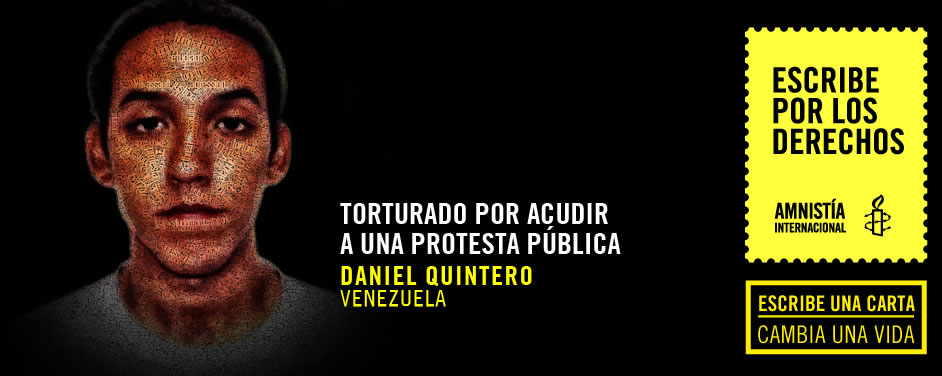

<script src="transfer.js"></script>
<section>
    <div class="banner">
        <div class="wrap">
            <figure>
                
            </figure>
        </div>
    </div>
    <div class="wrap big">
        <article>
            <div class="wrap">
                <h2 class="tleft">Tus palabras pueden cambiar la vida de 
                    Daniel Quintero:</h2>
                <div class="cont_left">
                    <p>
                        Daniel Quintero, de 21 años, fue golpeado, intimidado y amenazado de violación por miembros de la Guardia Nacional de Venezuela, tras ser arrestado cuando regresaba a su casa después de una manifestación contra el gobierno en febrero de 2014.
                    </p>
                    <p>
                        “Lo primero que recibí fue patadas en la cara, golpes en la cara, patadas en las costillas, cachazos en la frente”, dijo a Amnistía Internacional. Se turnaban para golpearlo, explicó Daniel. “Uno de ellos me dio latigazos con una especie de cuero en el hombro izquierdo.” Le obligaron a desvestirse y quedarse en ropa interior, lo esposaron y le obligaron a estar nueve horas doblado con las manos tocando los tobillos. Si se movía, lo golpeaban.
                    </p>
                    <p>
                        Daniel dijo a Amnistía Internacional que lo humillaron, insultaron y amenazaron repetidamente. En un momento dado, el que estaba al mando “me dijo que me iban a prender fuego. Tenía una lata de combustible, cables y fósforos. El ejército me rodeaba mientras me golpeaban nueve veces con su porra.” 
                    </p>
                    <p>
                        Daniel es una de las decenas de personas que ha denunciado torturas y otros tratos crueles en Venezuela. Las autoridades parecen dirigir sus acciones contra personas que creen que participaron en las protestas masivas en todo el país este mismo año. 
                    </p>
                    <p>
                        Tu carta se unirá a miles más que enviaremos al presidente de Venezuela, Nicolás Maduro, para pedir:
                    </p>
                    <p>
                        Una investigación completa e independiente sobre las denuncias de tortura sufrida por Daniel y llevar a los responsables ante la justicia.
                    </p>
                </div>
                <div class="cont_right">
                    <iframe src="formulario.html" seamless="seamless" scrolling="no" frameborder="0" style="border:0; overflow:hidden;" width="100%" height="600"></iframe>
                </div>
                <div class="clear"></div>
            </div>
        </article>
    </div>
    <div class="yellow"></div>
</section>